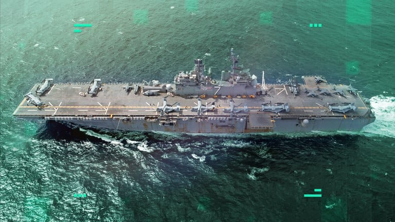

世界苦茶11月02日新闻 | 26条 | 中国暂停稀土出口管制

中国暂停稀土出口管制 | 海南琼中农民示威 | 多名中国人在美ICE羁押期间死亡 | 中国明年将于深圳举办APEC峰会
苦茶数据
美元兑人民币：7.11（昨日7.12，前日7.11）
美元兑日元：153.95（昨日154.05，前日152.49）
上证指数：休市（昨日3954，前日3961）
标普500指数：休市（昨日6840，前日6822）
比特币：110206（昨日110359，前日109290）
布伦特原油：64.77（昨日64.60，前日64.53）
中国新闻
• 海南琼中农民示威 官方通报无群众伤亡。
中国海南省琼中自治县一家国企分公司砍倒争议土地上的槟榔树，引发当地村民不满，在该公司办公楼前聚集抗议。官方通报称，纠纷经协调处理，目前态势平稳，无群众伤亡。据香港《星岛日报》报道，砍倒槟榔树的是海南天然橡胶产业集团，大批当地农民星期五白天围堵该公司办公楼，把被砍伐的槟榔树堆到大楼门口，讨要说法。网传图片和视频显示，示威者堵住公司大门并呼喊口号，晚间还有愤怒的村民将院内多辆汽车推翻、拆毁公司招牌，向公司人员和警察投掷石块等。中共琼中黎族苗族自治县委宣传部“奔格内琼中”微信公众号星期六下午通报称，针对网民反映海胶某公司与群众土地纠纷冲突等情况，琼中县高度重视，立即成立调查工作组，开展调查处置工作。
• 中国与阿根廷合作的射电望远镜是否因美国施压而被阻挠。
位于山巅的中阿射电望远镜被形容为地球南方天空的“灯塔”。一旦投入运行，这座拉丁美洲最大的单口径望远镜预计将为恒星形成、脉冲星等天体以及银河系遥远中心带来新见解。然而，原定于明年三月完成的建设自六月以来被推迟，原因是一个国际协议未获续签，从中国运来的部件被阿根廷海关扣留。中阿射电望远镜项目经理、隶属于国家科学与技术研究委员会的马塞洛·塞古拉在接受南华早报采访时表示，该委员会已停止支持该项目。“这导致自9月3日起被阿根廷海关扣留的货物我们无法取回，”塞古拉说。“因此我们无法组装剩余的部件。
• 多名中国人在美ICE羁押期间死亡引发人道主义讨论。
根据美国移民和海关执法局官方报告，截至2025年9月30日，今年已有23人在ICE羁押中心死亡，其中包括数名中国人，引发了人们对于ICE设施是否过度拥挤，医疗服务是否充足等人道主义要求的讨论。根据美国移民和海关执法局的官方通报，63岁的中国人、曾因性侵儿童罪被定罪的黄凯寅于2025年10月25日在德克萨斯州圣安东尼奥市的卫理公会都会医院去世，死因疑似为心脏手术并发症。这是今年已知第四名在被ICE羁押期间身亡的中国籍人士，也引发了人们对于ICE设施是否过度拥挤，医疗服务是否充足等人道主义要求的相关讨论。
• 俄中首次联合潜艇演习细节曝光。
俄中在一次向美方“传递信息”的潜艇演习中“共享声纳数据” 一家中国军事杂志称，这次8月举行的演习显示了两国高度的战略信任。首次俄中联合潜艇演习的细节已在一本军事杂志上公布，称两国共享了声纳数据并进行了救援演练。演习于8月上旬进行，参加的是两艘基洛级柴电攻击潜艇——俄方的沃尔霍夫号和中方的长城210号，整个演习由两艘俄方水面舰艇提供支援。据中国《兵工科技》杂志报道，两艘潜艇穿过将韩国与日本分隔开的对马海峡，进入东海，最终返回基地，总航程约2000海里。报道称，这一系列在日本附近、恰逢该国二战投降纪念日前后举行的行动，也是针对美日同盟的一种姿态。作为巡逻的一部分，两艇演练了对模拟敌方潜艇的探测。
印太新闻
• 台湾APEC代表会晤美财长 美防长呼吁东盟对华立场坚定。
台湾APEC代表林信义周六表示与美财长举行了会晤，就供应链与半导体议题进行了讨论。美防长赫格塞思在马来西亚出席东盟防长会议时呼吁东南亚国家“坚决应对”中国在南海的“破坏性行为”，并提出建立区域海上联合监测与快速反应机制。台湾APEC代表林信义在韩国庆州对记者表示，双方会晤约40分钟，讨论了安全供应链与科技合作，美国财长贝森特“对台湾如何建立半导体产业集群的过程表示出浓厚兴趣”。林信义说：“我们进行了非常广泛的讨论，涵盖科技合作，供应链安全等多个议题。他表示非常好奇台湾是如何发展起高科技半导体产业的。
• 郑丽文许诺国民党将开创百年两岸和平。
台湾最大在野党国民党新任党主席郑丽文星期六正式就任。她在全台党代表大会致词，向台湾2300万民众许诺，未来国民党绝对会捍卫民主自由，重新创造经济奇迹，“中国国民党绝对会是开创百年两岸和平，带领台湾的最重要政党”。郑丽文近日接受《德国之声》和法新社访问，都重申两岸和平的重要性，也强调没有放弃武力保卫台湾的决心。但她反对赖清德政府明年编列9495亿元防务预算，占年度总预算三分之一，严重排挤教育健保等支出。赖政府在美国压力下，明年编列的防务预算已占地区生产总值的3.32%。
科技新闻
• 中国发射神舟二十一号飞船 创神舟与空间站对接最快纪录。
中国神舟二十一号载人飞船成功发射，并与空间站组合体完成自主快速交会对接，创下神舟飞船与空间站交会对接的最快纪录。据新华社报道，搭载神舟二十一号载人飞船的长征二号F遥二十一运载火箭，星期五晚11时44分在酒泉卫星发射中心点火发射。约10分钟后，飞船与火箭成功分离，进入预定轨道，航天员乘组状态良好，发射取得成功。飞船入轨后，星期六凌晨3时22分成功对接空间站天和核心舱前向端口，整个对接过程历时约3个半小时，创下神舟飞船与空间站交会对接的最快纪录。在此之前，神舟十二号至神舟二十号载人飞船均采用6个半小时交会对接方案。
• 安世半导体前CEO被指拟将设备专利转移至中国。
中国和荷兰围绕安世半导体的僵局至今未解，知情者透露，荷兰政府上月罕见接管这家欧洲晶片制造商的部分原因是，前中国籍首席执行官张学政计划运走公司位于德国和英国工厂的一些机器。彭博社引述要求匿名的知情者报道，除了运走设备外，张学政也打算把专利从荷兰转移至中国。知情者也透露，张学政计划裁减公司40%的欧洲员工。知情者称，这些新细节揭示张学政为了母公司闻泰科技的利益，而阻碍安世欧洲业务的种种举措。张学政也是闻泰科技的创始人。报道说，荷兰看守政府对张学政“掏空”安世在欧洲业务的担忧，有助于解释为何它在没有事先征得欧洲合作伙伴同意的情况下便采取行动。
经济新闻
• 李强谈十五五规划：做强国内大循环绝不是不要国际循环。
中国总理李强在官媒《人民日报》撰文指出，未来五年要把发展立足点更多放在做强国内大循环上；但他同时强调，做强国内大循环“绝不是不要国际循环”。受访学者分析，中国将采取“既要又要”战略：在扩大内需的同时，也重视国际市场参与、保持对外开放。《人民日报》星期四在第三版刊发李强署名文章，标题为《“十五五”时期经济社会发展的指导方针》，全文5000多字。中共二十届四中全会上周审议通过《关于制定国民经济和社会发展第十五个五年规划的建议》，中国国务院将据此制定“十五五”时期规划纲要。李强开篇提出，要以宽广视野和战略眼光，统筹国内国际两个大局，准确把握“十五五”时期中国发展所处的历史方位。
• APEC宣言未提多边主义 中美贸易与AI博弈持续。
在全球贸易体系受保护主义抬头冲击下，亚太经合组织成员经济体星期六一致采纳《APEC领导人庆州宣言》，强调促进贸易韧性及惠及各方的重要性，但未提多边主义和世界贸易组织。中国国家主席习近平星期六在APEC闭幕前，再一次于大会发言时，力推中国此前提出的建立全球人工智能治理机构倡议，与美国反对全球监管AI的立场大相径庭。受访学者分析，APEC宣言须获全部21个成员经济体包括美国的同意才会被采纳，“多边主义”和“世界贸易组织”未列入不让人意外；中美AI博弈，将持续在多边场合产生外溢效应。为期两天的APEC领导人非正式会议，在美国对等关税冲击全球贸易和供应链的背景下，于韩国庆州举行。
• 新疆政协“70后”副主席金之镇任上被查。
中国新疆维吾尔自治区政协“70后”副主席金之镇，因涉嫌严重违纪违法在任上被查。他曾长期任职的能源和国企系统，已被中共高层连续两年列入重点反腐领域。中共中央纪委国家监委网站星期六通报了金之镇被查的消息，他是今年第51名官宣被查的中管干部。公开资料显示，金之镇今年55岁，回族，江苏镇江人，仕途轨迹始于新疆发改委。他在2009年调入国企系统后，先后担任新疆化工有限责任公司副总经理、新疆新能源有限责任公司副总经理，以及新疆国际经济合作有限责任公司董事长等职。金之镇在2016年重回政府系统，先后担任乌鲁木齐市米东区区长，昌吉回族自治州政府州长等职，在2023年当选新疆政协副主席。
• 日经：特朗普对华贸易战因战略失误遭反噬，单边主义、短视与关税策略令北京占据上风。
日经亚洲分析说。本周，特朗普与中国国家主席习近平的峰会未能在纠正国际贸易失衡方面取得实质进展，这源于华盛顿在对华策略上犯下三大错误。自2月以来，特朗普政府试图通过征收高达145%的关税，排挤中国商品。财政部长斯科特·贝森特表示，目标是与中国实现“公平贸易”，特朗普政府指责中国“偷走了美国的就业岗位”。但贸易失衡依然存在。今年1月至9月，中国对美出口同比下降16.8%，但对全球出口总量却增长6.1%。同期，美国整体进口同比增长11.5%，显示关税政策反而加速了中国商品经由东南亚等地的转口。美国同期的贸易逆差同比扩大23%，而中国工业产出增速仍超过5%。美国人口占全球4%，消费却占到31%。
• 加拿大总理称他曾告诉安大略省省长不要播放让特朗普不满的反关税广告。
加拿大总理卡尼表示，他曾告诉安大略省省长别播出激怒特朗普的反关税广告 多伦多 — 加拿大总理马克·卡尼表示，他曾告诉安大略省省长不要播出一则引发美国总统唐纳德·特朗普中止与加拿大贸易谈判的反关税广告。卡尼还证实，他在亚太经合组织峰会的一次晚宴上向总统道歉，因为特朗普“感到被冒犯”。安大略在美国播出的电视广告通过引用前美国总统罗纳德·里根的一段演讲来批评特朗普的关税政策。这则广告激怒了特朗普，导致他中止与加拿大的贸易谈判，并表示计划将对加拿大进口商品的关税再提高10%。
• 卡尼称如自己的“世代性投资”预算案失败，他已经准备好再次面对选举。
据CBC报道，加拿大总理卡尼周六表示，如果需要，他已准备好进行大选，如果即将公布的政府预算未能通过。这份财政计划将在周二提交少数派议会，但执政的自由党能否获得反对党的支持仍不确定，由于自由党未能拿下多数席位，没有反对党支持会输掉预算案投票，这将导致现政府倒台。在韩国召开的亚太经合组织峰会闭幕时，卡尼大力推介政府未来计划的投资和措施，但他并未正面回应是否相信众议院中有足够票数通过预算。“我百分之百确信，这份预算是当前对这个国家最合适的选择，”卡尼在登机回国前表示。“这不是一场游戏。这是全球经济的一个关键时刻，对我们的国家来说更是如此。
• 伯克希尔·哈撒韦利润增长17%，沃伦·巴菲特准备卸任首席执行官。
伯克希尔哈撒韦利润增长17%，沃伦·巴菲特准备辞去首席执行官职务 伯克希尔哈撒韦利润增长17%，沃伦·巴菲特准备辞去首席执行官职务 内布拉斯加州奥马哈——随着传说中的95岁投资者准备在一月放弃首席执行官头衔，沃伦·巴菲特的公司利润增长了17%，这得益于相对温和的飓风季以及今年更多的账面投资收益。不过，上个月对OxyChem的97亿美元投资虽是公司多年来最大的一笔交易，却难以大幅削减伯克希尔在九月底持有的3，817亿美元现金储备。目前大多数投资者最关心的是副董事长格雷格·阿贝尔将于一月接任首席执行官。
• 美财长：中国收紧稀土出口管制“是一个错误”。
习近平和特朗普会晤后，中国方面已经宣布暂停稀土出口管制措施。正在韩国出席APEC峰会的美国财长贝森特认为，中国之前收紧管制就是一个错误，而北京领导人现在则是在担心全球的反对声音。在接受英国《金融时报》采访时，美国财长贝森特说，中国“已经让所有人意识到危险，他们犯了一个真正的错误。”“把枪放在桌子上是一回事，朝天鸣枪又是另一回事。” 贝森特认为，中国将没法再采用同样的手段，因为“我们有了抵消措施”。
• 习近平访韩收官APEC 李在明寻求“安抚北京”。
习近平访韩收官APEC 李在明寻求“安抚北京” 2025年11月1日周六，中国国家主席习近平与韩国总统李在明举行会晤，为其十多年来首次访韩。亚太经合组织领导人在周六闭幕的年度峰会上通过联合声明，强调在全球贸易体系裂痕日益加深之际，在贸易中实现韧性与共享利益的必要性。本届APEC领导人峰会由韩国主办，日益加剧的地缘政治紧张局势和强势的经济政策——从美国关税到中国出口管制——都给全球贸易带来了压力。联合声明未提“多边主义”和WTO 亚太领导人在峰会闭幕之际通过了一项联合宣言，强调贸易韧性和共享利益的必要性。
• 在与荷兰争端后，中国将放宽对欧洲的芯片出口禁令。
在荷兰接管在荷兰注册的中国控股芯片制造商Nexperia后，中国表示将放宽此前对其实施的芯片出口禁令。去年九月，荷兰援引一项冷战时期的法律接管了Nexperia，称其存在“严重治理缺陷”，可能在紧急情况下影响芯片供应——而芯片对汽车制造至关重要。对此，中国曾表示不会将其在中国工厂完成的Nexperia芯片再出口到欧洲。上月，沃尔沃汽车和大众等公司警告称，这可能导致其工厂短暂停产。周六，北京方面表示将考虑对个别企业给予禁令豁免。约70%在欧洲生产的Nexperia芯片会被送往中国进行封测并再出口到其他国家。（翻评：中低端芯片产能卡脖子，我觉得太快让其他国家进行产能替代对中国不是好事。）
• 习近平宣布中国深圳将主办2026年APEC会议。
中国将于2026年在深圳主办亚太经合组织会议，"大力"推进人工智能合作 习近平在本届峰会于韩国闭幕之际宣布此事 中国国家主席习近平周六在本届亚太经合组织会议闭幕时宣布，中国将于2026年在深圳主办APEC会议。此次峰会在韩国庆州举行。习近平在交接仪式上表示，中国将利用明年东道主的角色，与各国一道推动亚太地区的增长与繁荣。他说，中国将“大力”推动包括人工智能和数字经济在内领域的合作。
俄乌战争
• 俄罗斯在过去24小时内在乌克兰各地至少造成4人死亡、48人受伤。
乌克兰官员11月1日表示，在过去一天俄罗斯对乌克兰的袭击中至少有4名平民死亡，51人受伤。乌克兰空军称，俄罗斯在夜间用223架攻击无人机袭击乌克兰，其中约140架为“沙赫德”型滞空弹，另有格尔贝拉等无人机及诱饵无人机。乌克兰防空部队击落206架无人机。17架无人机据报击中七个不同地点的目标。扎波罗热州州长伊万·费多罗夫报告称，俄罗斯军队对该州14个定居点发动496次袭击，造成1人死亡、3人受伤。官方收到31起私人住宅、公寓、商业建筑和基础设施受损报告。尼古拉耶夫州州长维塔利·金表示，俄军对尼古拉耶夫发动弹道导弹袭击，据称使用一枚携带集束弹头的伊斯坎德尔-M导弹。袭击造成1人死亡，19人受伤。
• 乌克兰称击中一条靠近莫斯科、为俄军供油的关键管道。
乌克兰军方情报局周六表示，乌克兰部队击中位于莫斯科地区的一条重要燃料管道，该管道为俄军提供燃料。此举发生在俄罗斯对乌克兰能源基础设施持续进行大规模无人机和导弹攻击的背景下。这次行动据该局在 Telegram 频道上发布的声明称发生在周五深夜。该机构以其缩写 HUR 闻名，称此次行动是对俄罗斯军事后勤的“一次严重打击”。HUR 表示，其部队袭击了环形管道，该管道全长约 400 公里，从梁赞，下诺夫哥罗德和莫斯科的炼油厂向俄军输送汽油，柴油和航空燃油。
• 乌克兰反腐败法庭判处前税务局长6年监禁。
乌克兰反腐败高级法院于10月31日对该国前国家财政服务局局长罗曼·纳西罗夫就其卷入与一名前议员有关的天然气开采丑闻一案判处六年监禁，反腐败行动中心宣布。反腐败行动中心在Facebook上写道，纳西罗夫被认定在作出“非法决定”上扮演角色，从而利于前议员，现已被禁的亲俄“地区党”代表奥列克桑德尔·奥尼申科。乌克兰专门反腐检察院随后证实，纳西罗夫被以滥用职权罪名根据该国刑法定罪。纳西罗夫在2015–2016年期间任国家财政服务局局长，涉案于推迟对由奥尼申科领导的一家公司开采矿产使用的非法租金支付。
世界新闻
• 白宫限制记者进入新闻秘书办公室。
白宫新闻团成员现在被限制进入新闻秘书办公室，这是特朗普政府一系列限制媒体通行措施中的最新一项。新规定称，记者未经“预约”不得进入所谓的“Upper Press”办公区，即白宫新闻秘书卡罗琳·利维特所在的地方。数十年来，该区域一直对白宫通讯记者开放，支持总统与公众之间的信息自由流通。白宫表示，此次收紧措施是出于安全考虑。一份周五晚间的白宫备忘录断言：“这项政策将确保在接触敏感材料方面遵循最佳做法。”对此，代表数百名持证记者的白宫记者协会表示，其“明确反对任何限制记者进入长期可供新闻采集的区域的努力，包括新闻秘书办公室在内。”该协会称：“新的限制妨碍新闻团质询官员，确保透明度并追究政府责任的能力。
• “没人想到会持续这么久”：随着政府停摆接近历史最长纪录，特朗普愈发感到沮丧。
白宫原以为这次停摆会很快结束。现在他们感到沮丧。白宫官员在停摆之初确信，在这次拨款中断期间，特朗普政府处于更有利的位置与左翼对抗。唐纳德·特朗普总统在2025年10月31日抵达佛罗里达西棕榈滩棕榈滩国际机场时对记者发言。十月初，几位特朗普政府官员还有个打赌，猜测这次停摆会持续多久。白宫当时有信心民主党人会迅速让步。没人猜超过十天。这一说法由一位接近白宫、获准匿名以便谈论内部想法的人转述，突显出政府对民主党人即便在停职停薪和诸如食品援助等社会项目受威胁的情况下，仍会坚持让政府关门的决心，判断严重失误。
• 教宗宣告纽曼枢机为教会博士，并示意天主教教育为优先事项。
教皇利奥十四世周六将天主教会的最高荣誉之一授予圣约翰·亨利·纽曼──这位深具影响力的19世纪英国归信者与神学家，被宣布为教会博士，并被作为天主教教育者的榜样。在天主教两千年历史上，只有另外37人被授予“博士”称号。纽曼现在加入了圣奥古斯丁，圣德肋撒和圣十字若望等重大基督教人物的行列。该称号认可了纽曼在英格兰圣公会与天主教会中皆受爱戴，具有普遍吸引力，并对理解基督教信仰作出了永恒而卓著的贡献。纽曼出身于英格兰教会，是神学家兼诗人，以关于教义发展，真理与大学本质的著述和讲道而著称。他因在1845年决定归信天主教时遵从良心，付出巨大个人代价。
• 摩尔多瓦任命亲欧盟的蒙特亚努为新总理。
亚历山德鲁·蒙特亚努周六在一次由总统玛娅·桑杜和议长伊戈尔·格罗斯出席的仪式上宣誓就任摩尔多瓦总理。现年61岁的蒙特亚努是一位曾在世界银行和摩尔多瓦国家银行工作的经济学家，这是他首次担任政治职务，旨在协助推动该国加入欧盟的进程。摩尔多瓦议会于周五任命蒙特亚努为总理，此前九月的大选使桑杜领导的行动与团结党在与亲俄对手的较量中取得决定性胜利。